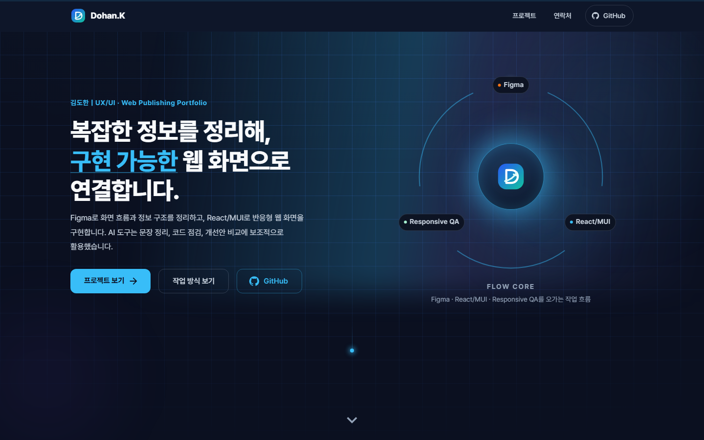
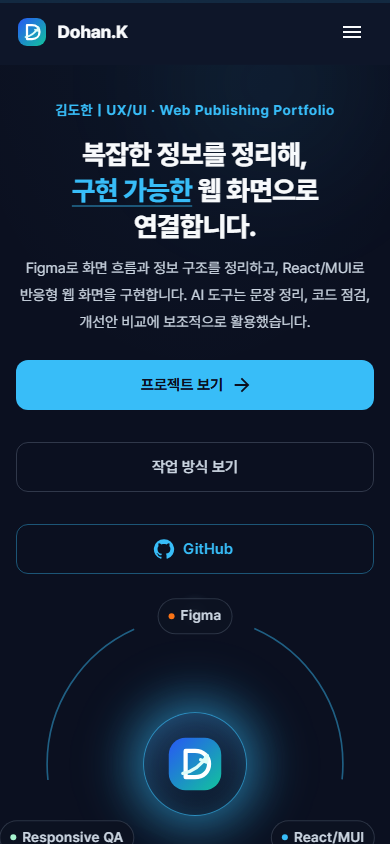
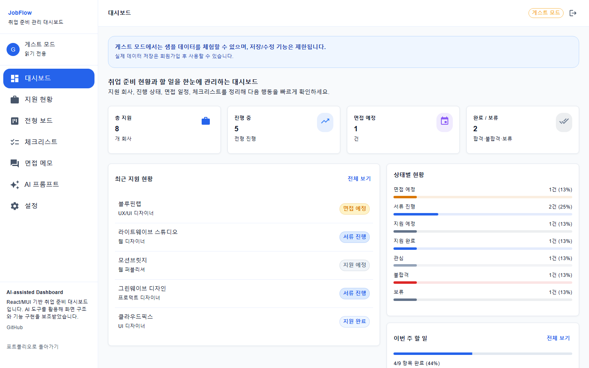
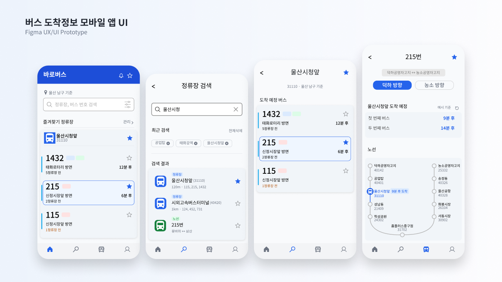
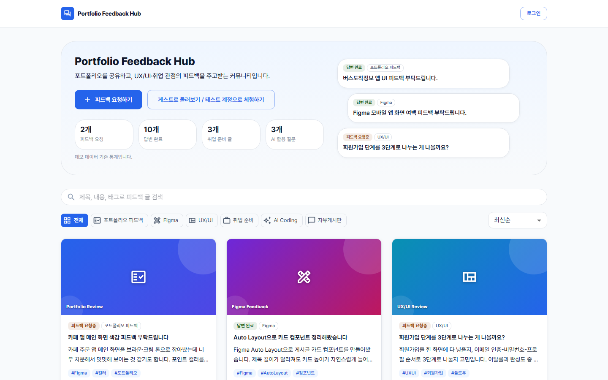

김도한
지원 분야: UX/UI · Web Publishing · React/MUI · Responsive QA
복잡한 정보를 정리해, 구현 가능한 웹 화면으로 연결합니다.
개요
- AI 활용 범위
- Figma로 화면 흐름과 정보 구조를 정리하고, React/MUI로 반응형 웹 화면을 구현합니다. AI 도구는 문장 정리, 코드 점검, 개선안 비교에 보조적으로 활용했습니다.
- API/데이터 사용 방식
- 홈 화면의 대표 프로젝트 카드는 기본적으로 정적 fallback 데이터(projectsFallbackData.js)를 사용하며, Supabase 연결이 가능한 경우에만 이를 대체합니다. 프로젝트별 API·데이터 연동 범위는 아래 각 프로젝트 항목에 따로 표시했습니다.
메인 화면


대표 프로젝트
JobFlow 업무 대시보드

- 목적
- 지원 현황과 할 일을 한 화면에서 확인하고, 다음 행동을 빠르게 결정할 수 있는 구조를 만드는 것이 목표였습니다.
- 담당 역할
- 화면 구성 · React/MUI 구현 · Supabase 연동 · AI 도구 활용
- 사용 기술
- React, Vite, MUI, Supabase, Claude
- 실제 구현 범위
- 지원 현황 요약 카드, 상태별 진행 현황(막대 그래프), 체크리스트 진행률, 할 일 목록
- 구현하지 않은 기능 / 한계
- 기간별 추이 비교나 상세 분석 리포트 같은 고급 통계 기능, 실시간 알림, 외부 채용 플랫폼 API 연동은 구현하지 않았습니다.
- API와 데이터 사용 방식
- 게스트 모드에서는 로컬 샘플 데이터만 사용하며 저장·수정 내용은 서버에 반영되지 않습니다. 로그인한 사용자는 Supabase Auth로 인증하고, 지원 현황·체크리스트·면접 메모가 각각 Supabase PostgreSQL 테이블에 실제로 저장·조회됩니다. AI 프롬프트 메뉴는 입력값을 정해진 템플릿에 채워 넣는 정적 기능이며, 외부 생성형 AI API를 호출하지 않습니다 — 생성된 문구는 사용자가 직접 ChatGPT/Claude 등에 복사해 사용해야 합니다.
- AI 활용 범위
- Claude를 활용해 화면 구조, 컴포넌트 설계, 코드 구현 방향을 보조받았습니다. 단순히 AI가 생성한 결과물을 그대로 사용하기보다, 포트폴리오 목적에 맞게 기능과 화면 흐름을 직접 정리하며 개선했습니다.
- 링크
- 라이브 사이트 보기 → · GitHub 보기 →
대중교통 버스 도착정보 모바일 앱 UI

- 목적
- 현재 위치 기준 즐겨찾기 정류장과 도착 임박 버스를 홈 화면에서 바로 확인하고, 정류장 검색부터 노선 상세, 즐겨찾기 관리까지 자연스럽게 이어지는 화면 흐름을 설계하는 것이 목표였습니다.
- 담당 역할
- 모바일 앱 화면 설계 · 정보 구조 구성 · Figma 프로토타입 제작
- 사용 기술
- Figma, Mobile App, UX/UI, Prototype
- 실제 구현 범위
- 정류장/노선/도착 시간 중심의 모바일 UI 프로토타입
- 구현하지 않은 기능 / 한계
- 홈, 정류장 검색, 노선 상세, 마이페이지 4개 화면만 설계했으며, 즐겨찾기 노선 관리 화면이나 알림 상세 설정 화면은 설계에 포함하지 않았습니다. 실제로 동작하는 코드 구현체가 아니라 Figma 프로토타입 단계입니다.
- API와 데이터 사용 방식
- Figma 프로토타입 화면에 표시된 정류장·노선·도착 시간 정보는 사용자 흐름 검증을 위한 정적 예시 데이터입니다. 실제 버스 도착 정보 API는 연동하지 않았고, 실시간 데이터 처리도 없습니다.
- AI 활용 범위
- AI 도구를 활용하지 않은 프로젝트입니다.
- 링크
- Figma 프로토타입 보기 → (실제 배포된 라이브 사이트 없음) · 공개 GitHub 링크 없음
Portfolio Feedback Hub

- 목적
- 포트폴리오 피드백 글을 쉽게 탐색하고, 카테고리별로 정리된 게시글 흐름을 통해 방문자가 서비스 목적을 빠르게 이해할 수 있도록 만드는 것이 목표였습니다.
- 담당 역할
- UI 구조 설계 · React/MUI 구현 · Supabase 연동 · AI 도구 활용
- 사용 기술
- React, Vite, MUI, Supabase, React Router, Claude
- 실제 구현 범위
- 게시글/피드백 카드/상태 라벨 중심의 UI
- 구현하지 않은 기능 / 한계
- 현재는 취업용 포트폴리오 데모 프로젝트이며, 관리자 기능, 신고, 알림, 파일 업로드, 실사용자 관리 기능은 구현하지 않았습니다.
- API와 데이터 사용 방식
- 게시글 목록은 Supabase posts 테이블(profiles/post_likes/comments 조인)에서 조회하며, 조회 결과가 없거나 조회에 실패하면 정적 예시 데이터로 대체됩니다. 게스트 모드는 로그인 없이 화면을 둘러볼 수 있지만 글쓰기·댓글·좋아요는 로그인 또는 테스트 계정이 있어야 가능합니다. 테스트 계정은 실제 Supabase 계정이며, 권한 정책(RLS 등)의 세부 범위는 배포 환경 설정에 따라 별도 검증이 필요합니다.
- AI 활용 범위
- Claude를 활용해 라우팅 구조, 게시판 UI, 컴포넌트 설계, 기능 구현 방향을 보조받았습니다. 단순히 AI가 만든 코드를 그대로 사용하지 않고, 포트폴리오 목적에 맞게 게스트 접근성, 정보 구조, 상태 배지, 썸네일, 문구를 직접 정리하며 개선했습니다.
- 링크
- 라이브 사이트 보기 → · GitHub 보기 →